COM组件开发
假设
您熟悉基本的C++和Windows编程。
介绍
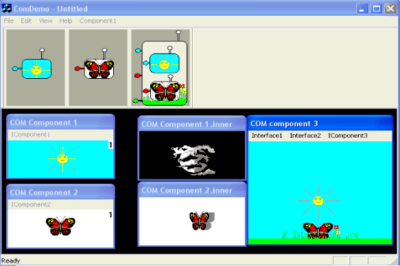
这篇文章是关于COM和COM组件。 它通过实现一个简单的COM组件来解释COM技术背后的一些细节。 本文首先介绍一些关于COM的背景知识，然后通过一个例子来指导读者实现和改进一个简单的COM组件。 该示例从一个公共文件中的COM组件和COM客户端的实现开始。 这个例子的改进是关于COM组件与客户端的分离。 客户端和组件首先被分离到两个不同的文件，然后组件将被放在一个DLL，它可以被加载到客户端的地址空间，最后的改进是在Windows注册表中注册组件，这样客户端不再绑定到组件，并且能够通过类工厂来创建它。 在下图中，组件和客户端之间的关系用链表示，当组件通过类工厂创建时，这些链将被完全打开。 在最后一部分，通过在新的COM组件中重用实现的组件来解释COM包容。 本文只是关于第一部分，其他部分在另外两篇文章中进行了解释。 演示应用程序的代码（Client + 3组件服务器）与文章中介绍的示例非常相似，只有一个窗口用于可视化组件本身。 下图展示了第一部分和第二部分：
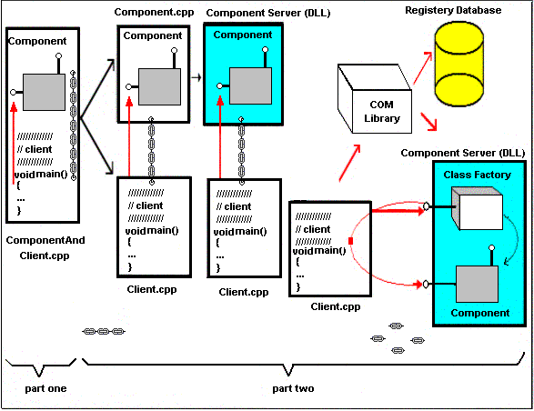
第一部分 - 背景
制作软件组件的二进制标准
在面向对象编程中，如果一个普通的标准框架还没有被使用，那么由不同供应商创建的软件对象就不能互相交互，而COM或者组件对象模型是使软件组件语言独立的二进制标准，而且是将应用程序分为分开的部分。 COM的实现对于用户来说是隐藏的（COM客户端），这意味着COM组件是以二进制形式提供的，并且已经被编译，链接和准备使用，它们只是一堆1和0，即它们只是机器代码，当客户端与它们交互时可以执行它们。 以下是COM的一些优点：
语言独立性（可以使用不同语言的COM组件）。
重用应用程序体系结构。
轻松扩展应用程序的功能，无需重建。
COM组件的功能
COM中的对象或组件是通过接口机制公开其功能的任何结构。 在C ++应用程序中，接口被定义为抽象基类。 一个接口是一个C ++类，只包含纯粹的虚拟成员函数。 这意味着接口没有实现，只是规定了其他类实现的函数签名。 纯抽象基类定义了COM需要的特定内存结构，当我们定义一个纯粹的抽象基类时，我们实际上是定义了一块内存的布局。 在派生类中实现抽象基类之前，不会为内存分配内存。 所以在下面的一段代码中， IComponent既是一个接口（因为它的内存布局遵循COM规范）和一个纯粹的抽象基类。
//通过接口定义组件的功能
//关键字“interface”只是“struct”接口的别名
interface IComponent {
//用于实现组件功能的方法:
virtual void __stdcall Function1()=0;如下图所示，由纯抽象基类定义的内存块由C ++中的COM组件接口定义，其中最重要的部分是演示应用程序中的Component2：
虚拟函数表或vtbl，它是指向虚拟函数实现的指针数组。
一个指向vtbl的指针，称为vtbl-Pointer
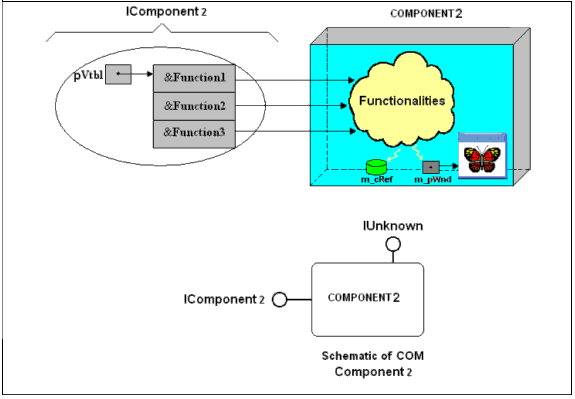
结论：在COM中，组件的功能是通过它们的接口获得的，这些接口是组件方法的地址或条目。
COM对象和接口的常见需求（基本操作）
在支持各种功能和接口的组件中，需要能够容易地访问这些接口。 另一个要求是客户应该能够管理组件的存在，并在完成使用后释放它们。 一个COM组件是一个组件，它通过一个所谓的IUnknown接口来支持这些操作。 通过继承和实现这个接口，COM对象允许客户端访问两个基本操作：
通过QueryInterface方法在对象上的多个接口之间导航。
通过引用计数机制来控制对象的生命周期，该机制使用称为AddRef和Release方法进行处理。
这三个方法构成了所有其他接口继承的IUnknown接口。 所有COM接口必须从IUnknown继承。 这意味着vtbl中的前三个条目对于所有COM接口都是相同的。 它们是在IUnknown接口中实现三种方法的地址。 所以在下面的代码中， IComponent接口从IUnknown接口继承成为一个COM接口：
// ------------------------------------------------ ------------ //
// 通过继承IUnknown接口成为一个COM接口//
// ------------------------------------------------ ------------ //
接口 IComponent： public IUnknown;
{ virtual void __stdcall Function1（）= 0
virtual void __stdcall Function2（）= 0
virtual void __stdcall Function3（）= 0
}; 由于每个COM组件都从IUnknown继承，具有IUnknown接口指针的客户端不知道它具有什么样的接口指针，并且只能使用QueryInterface方法查询其他接口。 这就是为什么这个接口被称为未知接口或IUnknown 。 下图显示了从IUnknown接口继承的IComponent接口作为COM接口。
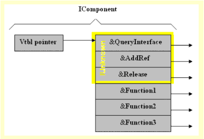
COM组件的类（实现）
当通过COM接口通过其方法（如Function1 - Function3 ）定义组件的功能时，可以通过从此新创建的COM接口派生类来定义组件的类。 在下面的例子中，这个类被称为CComponent ：
//----------------------------------//
//定义组件的类
//----------------------------------//
class CComponent:public IComponent
{
public:
//-------------------------------------------------------------------------//
//IUnknown方法，这是基本所有COM组件都需要的操作:
//-------------------------------------------------------------------------//
virtual HRESULT __stdcall QueryInterface(const IID& iid,void** ppv);
virtual ULONG __stdcall AddRef();
virtual ULONG __stdcall Release();
//-------------------------------------------------------//
//接口支持的新方法:
//-------------------------------------------------------//
virtual void __stdcall Function1();
virtual void __stdcall Function2();
virtual void __stdcall Function3();
private:
// Component's member data组件的成员数据
long m_cRef;// The reference count variable引用计数变量
};
下图展示了CComponent类的内存布局：
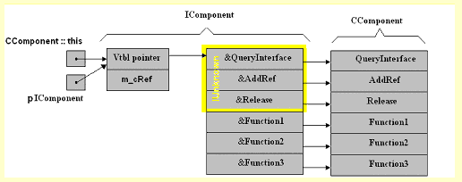
如图所示，类似CComponent类的“ this ”指针的接口指针指向vtbl指针。 在COM中，一个组件只能通过方法访问，而不能直接通过变量访问，而纯粹的抽象基类只有纯虚函数，并没有实例数据。 为了调用某个组件的方法（如Function1 ），可以使用IUnknown指针来查询或询问一个指向IComponent接口的指针，通过使用该指针，可以调用所需的方法：
// --------------------------------------------- //
// 获取指向IComponent接口的指针：
// --------------------------------------------- //
IComponent * pIComponent = NULL;
// “IID_IComponent”是IComponent接口的接口ID
pIUnknown-> QueryInterface（IID_IComponent，（void **）＆pIComponent;
// 调用组件的方法：
pIComponent->Function1(); 如前所述，我们可以通过QueryInterface方法在COM对象的接口之间导航。 接口封装了组件的实现细节。 无论何时我们想要访问一个组件，我们都希望获得一些所需的功能，所以很明显，我们在使用它之前知道组件的功能。如果我们不知道组件有什么功能，我们就不能使用它。 这意味着组件的客户端应该知道组件支持哪种功能或接口。 每个COM接口都有一个接口标识符，客户端可以使用它来查询特定的接口。 接口标识符是128位值，在前一段代码中， IComponent接口由IID_IComponent （ IComponent接口的接口标识符）标识。 所以，每当客户想要使用某个组件的功能时，就应该知道哪个接口实现了这个功能，并且要求它在使用QueryInterface方法查询该接口时提供一个接口标识符。 一个组件与一个窗口及其与窗口菜单的接口相当。 一个窗口的菜单像一个接口一样操作。 它是通过用鼠标指针选择其项目而获得的各种功能的入口。 事实上，演示应用程序中的三个组件的接口就像菜单，组件方法可以通过菜单项访问。 下图显示了这些组件之一。
一个窗口对象已被用作组件的成员数据，以便可视化组件，如图所示，该组件是一个带有菜单的窗口，该菜单作为其接口运行，组件的方法可通过菜单项访问鼠标指针就像一个接口指针。
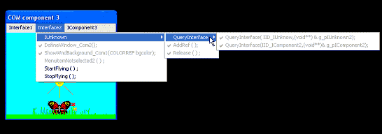
结论：COM类是特定接口的特定实现。
COM对象的实例化
正如前面所解释的，访问组件的功能的唯一方法就是通过它的接口，所以，一旦我们获得了一个指向组件的IUnknown接口的指针，我们实际上可以访问所有其他接口（使用QueryInterface方法）组件，并且因为所有的COM接口都继承自IUnknow接口，所以每个接口指针也是一个IUnknown接口指针。 一个COM对象是通过使用new运算符创建的，并且可以通过将指向该对象的指针转换为接口指针或IUnknown指针来获得所创建对象的接口指针，如下所示：
// 当使用new运算符分配单个对象时，
// 它提供了一个指向该对象的指针
IUnknown * pIUnknown = static_cast <IComponent *>（ new CComponent）; 接口标识符
接口标识符是类型GUID（全局唯一标识符）的结构。 GUID存在两种格式：字符串和数字。 在Windows注册表中，GUID的字符串格式显示在不同的位置，但是，在客户端应用程序或实际COM对象实现中使用GUID时，GUID的数字表示形式是必需的。 _GUID结构在basetyps.h头文件中定义，如下所示：
//-------------------------------------------//
// GUID定义：
//------------------------------------------//
typedef struct _GUID
{
unsigned longData1;// 32 bits
unsigned shortData2;// 16 bits
unsigned shortData3;// 16 bits
unsigned charData4[8];// 8*8 = 64 bits//-----------------------------------------// //Total bits = 128 bits
} GUID;您的开发环境将包含一个名为UUIDGEN.EXE或GUIDGEN.EXE的工具，它将为您提供一个或多个可以合并到源代码中的GUID。 我已经使用GUIDGEN.EXE在本文的所有示例中创建GUID。
一个从头开始的例子
现在，您可以制作一个简单的COM对象，让客户端使用它的功能。 使用以下步骤，可以制作本文开头的插图中显示的示例。
您可以下载每个部分的代码，并复制粘贴一些部分，以便快速制作您的应用程序。
使用应用程序向导，创建一个简单的Win32控制台应用程序，并选择一个空的项目。 这个应用程序将作为COM客户端，也将持有组件本身。
创建一个扩展名为“cpp”的源文件并为其命名。 我使用名称ClientAndComponent.cpp 。
让我们来决定组件的原始功能，例如，组件应该能够在屏幕上打印“COM from scratch.”的短语。 如前所述，一个COM组件通过接口机制公开了它的功能，所以需要做一个接口，如果这个组件是一个COM组件，这个接口应该从IUnknown接口派生。 所以，让我们调用接口IComponent ，从IUnknown接口派生它，并在一个名为Print的方法中定义所需的功能：
//-------------------------// //接口定义： //-------------------------// interface IComponent:IUnknown { //分配组件功能的新方法 virtual void __stdcall Print(const char* msg)=0; };为了识别IComponent接口，请使用开发环境中的工具UUIDGEN.EXE或GUIDGEN.EXE为其创建接口标识符：
// ----------------------------------------------- / / // 接口标识符，它是一个128位的值。 // ----------------------------------------------- / / // {853B4626-393A-44df-B13E-64CABE535DBF}字符串格式 static const IID IID_IComponent = { 0x853b4626, 0x393a, 0x44df, //Data1,Data2,Data3 { 0xb1, 0x3e, 0x64, 0xca, 0xbe, 0x53, 0x5d, 0xbf } };//Data4组件的类可以通过从定义的接口（ IComponent ）派生来定义：
// ---------------------------------- // // 定义组件的类 // ---------------------------------- // class CComponent:public IComponent { public: //---------------------------------------------------------------------------// //IUnknown方法，这是基本所有COM组件都需要的操作: //---------------------------------------------------------------------------// virtual HRESULT __stdcall QueryInterface(constIID& iid,void** ppv); virtual ULONG __stdcall AddRef(){return 0;} virtual ULONG __stdcall Release(){return 0;} //-------------------------------------------------------// //接口支持的新方法 //-------------------------------------------------------// virtual void __stdcall Print(const char* msg); };现在有必要实现这些方法：
//-----------------------------// //QueryInterface实现 //-----------------------------// HRESULT __stdcall CComponent:: QueryInterface(const IID& iid,void** ppv) { //请求IUnknown接口时,返回一个指向IUnknown接口的指针 if(iid==IID_IUnknown) { *ppv=static_cast<IComponent*>(this); } //请求IComponent接口时,返回一个指向IComponent接口的指针 if(iid==IID_IComponent) { *ppv=static_cast<IComponent*>(this); } return S_OK; } //-----------------------------// //Print方法 //-----------------------------// ////////////////////////////////////////////////// void __stdcall CComponent:: Print(const char* msg) { cout<<"-----------------------"<<endl; cout<<msg<<endl; cout<<"-----------------------"<<endl; }创建一个函数来实例化组件类中的对象：
//------------------------------------// // Creation function for the Component //------------------------------------// IUnknown* CreateInstance() { //COM组件初始化 //IUnknown* pIUnknown =static_cast<IComponent*>(new CComponent) ; IUnknown* pIUnknown =(new CComponent) ; return pIUnknown ; }最后一步就是让客户端通过组件的接口使用组件的功能：
//----------------// // Client //----------------// void main() { IUnknown* pIUnknown=CreateInstance(); IComponent* pIComponent=NULL; pIUnknown->QueryInterface(IID_IComponent,(void**)&pIComponent); pIComponent->Print("COM from scratch."); }
更好地实现IUnknown接口的方法
AddRef方法：
为了控制从组件类实例化的对象的生命周期，有必要有一个变量可以用作引用计数。 当组件被使用时，这个变量应该被增加，当客户端不再使用该组件时，该变量被减少。 AddRef()和Release()方法可以用来递增和递减这个变量。 因此，通过向组件的类添加一个私有成员变量并调用AddRef()和Release()方法，可以控制组件的生命周期，并释放为该组件分配的内存，只要此变量达到零值。 所以为了控制组件的生命周期，重新定义组件的类：// // Component // class CComponent : public IComponent { //IUnknown接口的方法: virtual HRESULT __stdcall QueryInterface(const IID& iid, void** ppv) ; // 增加引用计数变量“m_cRef”的方法 virtual ULONG __stdcall AddRef(); // 减少引用计数变量“m_cRef”的方法 virtual ULONG __stdcall Release(); //IComponent接口的方法: virtual void __stdcall Print(const char* msg); public: CComponent() ;// Constructor ~CComponent();// Destructor private: long m_cRef ;// 引用计数变量 };在构造函数中初始化引用计数变量为零：
///////////////////////////////// CComponent::CComponent() { Print("Constructing the component...") ; m_cRef=0; } //////////////////////////////////////// CComponent::~CComponent() { Print("Destructing the component...") ; }实现AddRef()方法：
////////////////////////////////////// ULONG __stdcall CComponent::AddRef() { Print("Incrementing the reference count variable..."); return InterlockedIncrement(&m_cRef); }Release（）方法：
如前所述， Release()方法将用于递减引用计数，并且在此方法中，如果引用计数达到零，则可以通过删除this指针来销毁组件的对象：
////////////////////////////////////// ULONG __stdcall CComponent::Release() { Print("Decrementing the reference count variable..."); if(InterlockedDecrement(&m_cRef) == 0) { delete thisreturn 0; }return m_cRef ; }QueryInterface方法：
程序中QueryInterface方法的限制之一是，它不会通知客户端是否查询到不受支持的接口。 HRESULT是涉及COM错误报告的关键类型，是一个简单的32位值。 COM组件使用HRESULT向客户报告条件。 像COM中的其他接口一样， QueryInterface方法返回一个HRESULT 。 HRESULT的最重要的位（严重性字段）报告函数调用是成功还是失败。 最后16位包含函数返回的代码。 两位保留供将来使用，其余13位提供关于返回码类型和来源的更多信息。 下图说明了这一点。
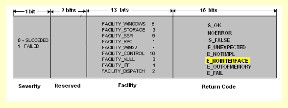
因此，使用以下实现，组件将能够通知其客户端组件是否支持特定的接口。
/////////////////////////////////////////////////////////////////////////// HRESULT __stdcall CComponent::QueryInterface(constIID& iid, void** ppv) {if (iid == IID_IUnknown) { Print("Returning pointer to IUnknown...") ; *ppv = static_cast<IComponent*>(this) ; }else if (iid == IID_IComponent) { Print("Returning pointer to IComponent interface...") ; *ppv = static_cast<IComponent*>(this) ; }else { Print("Interface is not supported!.") ; *ppv = NULL ;returnE_NOINTERFACE ; } //The reinterpret_cast operator allows any pointer to be converted into any other pointer type. reinterpret_cast<IUnknown*>(*ppv)->AddRef() ;// Incrementing the Reference count variable return S_OK ; }现在客户可以通过调用组件的Release()方法来释放组件：
//----------------// //Client //----------------// void main() { IUnknown* pIUnknown=CreateInstance(); IComponent* pIComponent=NULL; pIUnknown->QueryInterface(IID_IComponent,(void**)&pIComponent); pIComponent->Print("COM from scratch."); pIComponent->Release();// Releasing the Component }
下面的屏幕截图是从第一部分的例子中得出的：
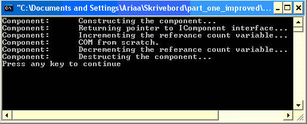
第一部分小结
组件应用程序有很多优点。
应该使用一个通用的标准来制作软件组件，以使它们变成独立于语言的，而COM是制作软件组件的二进制标准。
像硬件组件一样，某些功能被分配给软件组件。
COM组件的功能是通过接口机制获得的。
在C++应用程序中，接口被定义为抽象基类。
C++编译器为纯抽象基类生成的内存布局与COM为接口所需的内存布局相同。
由于纯粹的抽象基类只有纯虚函数，并且没有实例数据，COM组件只能通过它们的方法访问，而不能直接通过成员变量访问。
一个接口通过继承IUnknown接口成为一个COM接口，它有三种方法：
QueryInterface，用于在对象的多个接口之间导航，并返回指向查询接口的指针。
AddRef，用于控制对象的生命周期。
Release，用于控制对象的生命周期。
在COM中，每个接口指针也是一个IUnknown接口指针。
COM组件是使用new运算符创建的。
COM组件使用HRESULT类型向客户报告执行结果。
每个接口用一个接口标识符来标识，这个接口标识符是一个带有GUID类型的128位值。
C++类和COM类有一个重要的区别。在C++中，一个类是一个类型，但是COM类只是对象的一个定义，并且不包含任何类型，尽管C ++程序员可能使用C++类来实现它。
第二部分 - 打破连锁
在第一部分中 ，解释了一些关于COM技术的背景信息，一个简单的例子展示了客户端如何通过接口使用组件的功能。 在这一部分中，我将引导读者将组件的实现从客户端分离出来，以使客户端不再绑定到组件，并且能够通过类工厂来创建组件。
服务组件（Distribution分发）
软件组件服务器提供了一种方式，使得功能可以更容易地被重用，除此之外，当多个应用程序同时使用相同的功能时，它们可以减少内存开销，因为尽管每个应用程序都有自己的数据副本，但它们可以共享代码。 通过将一个组件放入一个DLL中，可以做出一种组件分布，并且该DLL成为该组件的服务器，并将包含该组件所支持的接口的实现。
构建组件的服务器（DLL）
在这个例子中，客户端和组件都在同一个文件中，现在它们应该是分开的，客户端将在一个.exe文件中，该文件将组件加载到它的地址空间中以便使用它，组件将由DLL提供服务。 客户端应该将DLL加载到其进程中，并在获得接口指针之前创建组件。 如果客户端链接到DLL中的CreateInstance()函数，则该组件的所有其他功能都可以通过接口指针访问。
所以，解决方案就是从DLL中导出CreateInstance()函数，这样客户端就可以直接链接到它。 该DLL将使用Microsoft的命令行工具之一从命令提示符构建。
下图显示了将用于制作DLL的服务器文件：
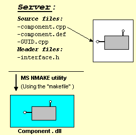
创建一个源文件（ Component.cpp ），并将组件类的定义和实现放入其中。
通过在文件末尾添加下面的一段代码来导出CreateInstance()函数：
// //输出Creation function // extern "C" IUnknown* CreateInstance() { IUnknown* pIUnknown = static_cast<IComponent*>(new CComponent) ; pIUnknown->AddRef() ; return pIUnknown ; }应该通知链接器CreateInstance函数将被导出，并且可以通过使用模块定义文件来完成。 模块定义文件是具有“def”扩展名的文件，其中包含有关导出，属性和其他信息的链接.EXE文件（已导出）或DLL的信息。 在.def文件中， CreateInstance函数的导出序号被选为1.下面的部分显示了这个文件的内容。
;component.def ; Component module-definition file ; LIBRARY Component.dll DESCRIPTION 'Components windows dynamik library' EXPORTS ; Explicit exports can go here CreateInstance @1 PRIVATE接口标识符和接口定义对于客户端和组件都应该是已知的，并且它们可以被分成两个单独的文件，它们在客户端和组件之间共享。 创建另一个源文件（ GUID.cpp ），它可以保存接口ID：
// // GUID.cpp - Interface ID // #include "objbase.h" extern "C" { extern const IID IID_IComponent = { 0x853b4626, 0x393a, 0x44df, //Data1,Data2,Data3 { 0xb1, 0x3e, 0x64, 0xca, 0xbe, 0x53, 0x5d, 0xbf } };//Data4 // The extern is required to allocate memory for C++ constants. }使用以下内容创建一个头文件（ interface.h ）：
// // Interface.h // interfaceIComponent : IUnknown {virtual void __stdcall Print(const char* msg) = 0 ; } ; // Forward references for GUID extern "C"{extern const IID IID_IComponent ; }创建一个“make”文件，其中包含用于使DLL具有以下内容的选项：
#Makefile ################################################################################ # Compiler options: # /c compile without linking # CL cl.exe is a 32-bit tool that controls the Microsoft C # and C++ compilers and linker. # The compilers produce Common Object File Format # (COFF) object (.obj) files. # The linker produces executable (.exe) files # or dynamic-link libraries (DLLs). # ################################## # Linker options: # # /DEF Passes a module-definition (.def) file to the linker # /DEBUG Creates debugging information # /DLL Builds a DLL CPP_FLAGS=/c /MTd /Zi /Od /D_DEBUG EXE_LINK_FLAGS=/DEBUG DLL_LINK_FLAGS=/DLL /DEBUG LIBS=UUID.lib ############################################# # Targets: # CodeProject is just a pseudotarget # CodeProject : component component : Component.dll ######################################### # Shared source files: # GUID.obj : GUID.cpp Cl $(CPP_FLAGS) GUID.cpp ########################################## # Component source files: # Component.obj : Component.cpp Interface.h Cl $(CPP_FLAGS) Component.cpp ######################################## # Link component: # Component.dll : Component.obj GUID.obj Component.def link $(DLL_LINK_FLAGS) Component.obj GUID.obj $(LIBS) /DEF:Component.def- 通过使用Microsoft程序维护实用程序（ NMAKE.EXE ）从命令行中生成DLL。 该程序是一个可以基于描述文件中包含的命令构建项目的工具。
打开命令窗口（点击开始选择运行菜单项，然后在对话框中写入cmd ）。
从命令行切换到包含服务器文件的目录。
从命令行输入： nmake / f makefile 。
NMAKE实用程序将在同一个文件夹中创建该DLL：
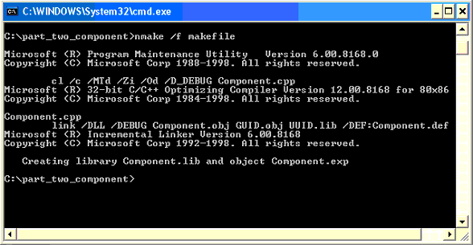
制作客户端Client
下图显示了用于制作客户端的文件。 客户端将在Visual C ++开发环境中构建。
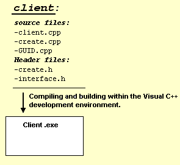
使用应用程序向导，创建一个简单的Win32控制台应用程序，并选择一个空的项目。
创建一个新的源文件（ Create.cpp ）并创建一个以DLL的名称为参数的函数，加载“DLL”，然后调用导出的函数CreateInstance() 。 函数的返回值将是CreateInstance()函数的返回值，它是一个IUnknown接口指针。 为了明确链接到“DLL”，该函数调用GetProcAddress函数来获取导出函数的地址。 GetProcAddress函数有两个参数。 第一个参数是“DLL”模块的句柄，第二个参数是“DLL”的名称。 通过调用LoadLibrary函数，可以获得模块句柄。
// Create.cpp #include "iostream.h" #include "unknwn.h"//IUnknown definition file. #include "Create.h" typedef IUnknown* (*CREATEFUNCPTR)(); ////////////////////////////////////////// IUnknown* CallCreateInstance(char* dllname) { //-----------------------------------------------------------------// // Load dynamic link library into client's process. //Loadlibrary maps a DLL module and return a handle //that can be used in GetProcAddress //to get the address of a DLL function //-----------------------------------------------------------------// HMODULE hm = ::LoadLibrary(dllname); if(hm ==NULL) return NULL; // Get the address of CreateInstance function. CREATEFUNCPTR Function = (CREATEFUNCPTR)::GetProcAddress(hm, "CreateInstance"); if(Function == NULL) return NULL; return Function(); }使用以下内容创建一个新的头文件（ Create.h ）：
// Create.h IUnknown * CallCreateInstance（char * dllname）;使用以下内容创建一个新的头文件（ interface.h ）：
// // Interface.h // interfaceIComponent : IUnknown {virtual void __stdcall Print(const char* msg) = 0 ; } ; // Forward references for GUID extern "C"{extern const IID IID_IComponent ; }创建另一个源文件（ GUID.cpp ），它可以保存接口ID：
// GUID.cpp - Interface ID #include "objbase.h" extern "C" { extern const IID IID_IComponent = { 0x853b4626, 0x393a, 0x44df, //Data1,Data2,Data3 { 0xb1, 0x3e, 0x64, 0xca, 0xbe, 0x53, 0x5d, 0xbf } };//Data4 // The extern is required to allocate memory for C++ constants. }创建一个源文件（ Client.cpp ）并执行main功能。 调用步骤2中创建的函数，以实例化组件并使用其方
//--------// // Client //--------// intmain() { HRESULT hr ;// Get the name of the component to use. char dllname[20]; cout << "Enter the filename of component's server [component.dll]:"; cin >> dllname; ...// calling the CreateInstance function in the// DLL in order to create the component. TRACE("Getting an IUnknown interface pointer...") ; IUnknown* pIUnknown = CallCreateInstance(dllname) ; ... IComponent* pIComponent ; hr = pIUnknown->QueryInterface(IID_IComponent, (void**)&pIComponent); if (SUCCEEDED(hr)) { ... pIComponent->Print("COM from scratch.") ;//using the component's functionality pIComponent->Release() ; ... } ...return 0 ; }将组件的服务器（ Component.dll ）放入客户端的同一目录中。 现在，客户端能够将DLL加载到其地址空间中，并使用LoadLibrary和GetProcAddress函数获取CreateInstance function的地址。 构建并运行客户端程序。
下面的屏幕截图显示了客户端应用程序，加载DLL并调用组件的Print方法后：
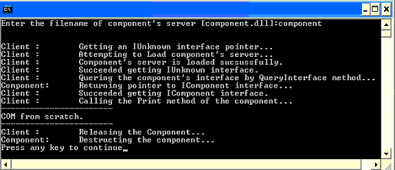
结论：通过服务器分发COM组件使得客户端可以轻松地重用组件的功能。
在不重建客户端的情况下扩展组件的功能
COM组件的优点之一是可以轻松扩展应用程序的功能而无需重建。 只要一个接口没有改变，客户端应用程序仍然可以使用这个组件，虽然它的功能是通过对它的方法进行新的改变来扩展的。 为了显示COM组件的优点，最好通过一个简单的例子来查看客户端应用程序的重建问题。 在下面，一个DLL链接到一个客户端应用程序，您可能会注意到，无论何时对DLL进行更改（例如，通过向DLL中的类添加新的成员变量并修改成员函数），客户端应用程序将无法运行，如果它不重建。
制作DLL
使用应用程序向导，创建一个类型为Win32动态链接库的新项目：
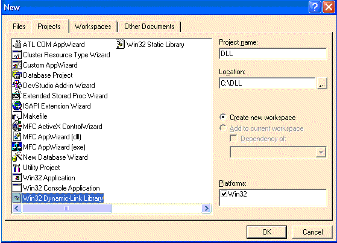
在向导的第二步中，选择“A simple DLL project”，然后单击完成 ：
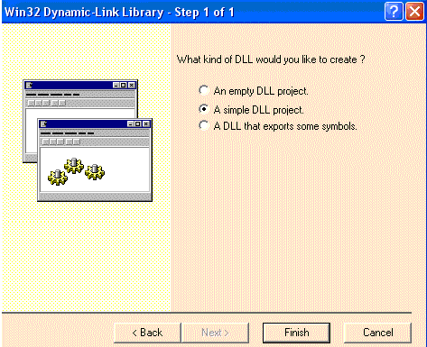
创建一个新的头文件，并用成员变量和可以从DLL中导出的成员函数定义一个类：
//myclass.h class CMyclass { long m_cRef; public: _declspec(dllexport) void Print(const char*msg); };创建一个源文件（ myclass.cpp ）并实现成员函数：
#include"StdAfx.h" #include"myclass.h" #include"iostream.h" /////////////////////////////////// void CMyclass::Print(const char* msg) { cout<<msg<<endl; }生成DLL
制作客户端并加载DLL
创建一个Win32控制台应用程序类型的新的空项目。
创建一个新的源文件，以加载和测试DLL（ client.cpp ）。
包含包含DLL中的类定义的头文件：
// client.cpp #include “ iostream.h” #include “ .. \ DLL \ myclass.h” /// ////////////////////////////// void main（） { CMyclass classObj; classObj.Print（ " COM from scratch。" ）; }将DLL项目中的DLL.lib文件添加到客户端项目（项目 - >添加到项目 - >文件，然后选择库文件（ .lib ）作为文件类型）：
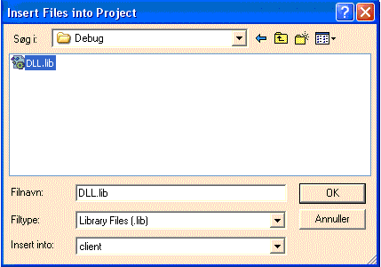
将DLL复制到客户端执行文件的相同文件夹中。 如果您构建并运行客户端应用程序“COM from scrach”。 将被写在屏幕上，并且DLL将被加载没有任何问题。
查看重建问题
返回到CMyclass类的实现并添加一个新的成员变量：
//myclass.h class CMyclass { long m_cRef; int m_i; // a new member variable public: _declspec(dllexport) void Print(const char* msg); };修改Print成员函数的实现：
void CMyclass::Print(const char* msg) { m_i=0; cout<<msg<<endl;重建DLL并将其复制到客户端执行文件的相同文件夹中。
使用DLL的新版本执行客户端应用程序而不重建，如果运行客户端应用程序，则会遇到问题，并且重新构建客户端应用程序可以解决此问题。 客户端应用程序的重建是一个大问题，因为它需要源代码。 现在，如果对第一部分中的示例中的组件的类进行相同的更改并重新构建DLL并使用客户端应用程序对其进行测试（无需重新构建它），则您将注意到客户端运行没有任何问题，尽管新成员变量被添加到组件的类中，并且Print方法的实现已被更改。 由于COM组件中的方法调用是间接的并通过它们的接口，所以如果方法被修改，就不会有任何问题。
结论：COM在不重建的情况下扩展了应用程序的功能。
例子的改进
在这个例子中，虽然客户端和组件是分开的，但客户端与组件的实现密切相关，应该知道DLL的名称，更改DLL的名字会影响客户端。 一个改进就是我们可以将组件从一个DLL移动到另一个或其他目录。 解决方法是用名为CoCreateInstance的COM库函数替换CallCreateInstance函数。 COM运行时库是Windows操作系统的一个组成部分，它提供了客户端定位和实例化COM对象的方法。 COM类对象可以通过CLSID（全局唯一标识符）来标识，这些标识符用于定位和创建对象的实例。 获得CLSID后，客户端应用程序将CLSID提交给COM运行时库，以加载COM对象并检索接口指针。 使用CLSID和注册表， CoCreateInstance查找指定的对象，创建该对象的实例，并返回指向该对象的接口指针。 为了使用CoCreateInstance创建一个对象，该对象必须在系统中注册。
CoCreateInstance
COM库包含此功能。 创建组件的最简单方法是使用CoCreateInstance函数。 CoCreateInstance在创建组件时使用类工厂。 它需要一个CLSID，创建相应组件的一个实例，并为这个组件的实例返回一个接口。CoCreateInstance需要4个参数和1个out参数（ IUnknown* ）。 通过将IID传递给CoCreateInstance ，客户端在创建后不需要在组件上调用QueryInterface 。
CoCreateInstance的参数：
第一个参数是对象的CLSID。
第二个参数用于将对象聚合为另一个对象的一部分。
第三个参数指定对象的执行上下文。
第四个参数是请求的接口的IID（接口ID）。
out参数的最后一个参数是指向创建的对象的接口指针。
组件的注册
可以使用CoCreateInstance创建的对象也必须在系统中注册。 注册将CLSID映射到对象所在的自动化组件文件（ .dll或.exe ）。 如果客户端需要在运行时获取CLSID，则必须有一种方法来动态定位和加载可访问对象的CLSID。此外，COM库必须有一些系统范围的方法，将给定的CLSID（不管客户端如何获得它）关联到实现该类的服务器代码。 换句话说，COM库需要一些持久存储的CLSID到服务器映射，它用来实现其定位器服务。 Microsoft Windows上的COM实现使用Windows系统注册表作为这种信息的存储。 在该注册表中，有一个名为“CLSID”的根键，服务器负责创建指向其模块的条目。 通常，这些条目是在安装时由应用程序的设置代码创建的，但是如果需要可以在运行时完成。 在Windows下安装服务器时，安装程序将为服务器支持的每个类在“CLSID”下创建一个子密钥，以CLSID的标准字符串表示形式作为密钥名称。 因此，CLSID的主要条目是CLSID键下的子键，它是大括号内以十六进制数字拼写的CLSID。 我们也可能希望将CLSID与所谓的编程标识符或ProgID关联起来，该编程标识符或ProgID可以有效地识别同一个类。 ProgID是一个没有空格的文本字符串，可以用来代替CLSID字符串。 标准的ProgID格式是<Vendor>.<Component>。<Version>，例如Codeproject.Cmpnt1.1。 这种格式是相当独特的，如果每个人都遵循这个格式，通常就不会有碰撞。 还有“VersionIndependentProgID”，它具有相同的格式，没有版本号。ProgID和VersionIndependentProgID都可以在根键下注册，并且具有可读的名称作为值。VersionIndependentProgID被映射到ProgID，它被映射到CLSID。 要创建注册表项，您可以编写代码或创建一个REG文件，只需运行它将其条目与注册表合并即可。 下图显示了演示应用程序中Component1的注册表项。
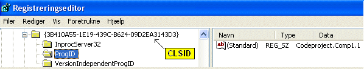
类工厂Class Factory
CoCreateInstance函数不直接创建COM组件。 相反，它会创建一个名为class factory的组件，然后创建所需的组件。 类工厂是创建其他组件的组件。 一个特定的类工厂创建的组件只对应一个特定的CLSID。 客户端使用类工厂支持的接口来控制类工厂创建每个组件的方式。 用于创建组件的标准接口是IClassFactory接口。 像其他COM接口一样， IClassFactory是从IUnknown接口派生的，有两种方法：
CreateInstance ，它创建一个指定的CLSID的未初始化的对象。
LockServer ，将对象的服务器锁定在内存中，允许更快地创建新的对象。
在下面的例子中，为了创建COM组件，定义了一个类工厂：
/////////////////////////////////////////////////////////////
// Class factory
//
class CFactory : public IClassFactory
{
public:
// IUnknown
virtual HRESULT __stdcall QueryInterface(constIID& iid,void** ppv) ;
virtualULONG __stdcall AddRef() ;
virtualULONG __stdcall Release() ;
// IClassFactory
virtualHRESULT __stdcall CreateInstance(IUnknown* pUnkOuter,constIID& iid,
void** ppv) ;
virtualHRESULT __stdcall LockServer(BOOL bLock) ;// Constructor
CFactory() : m_cRef(1) {}
// Destructor
~CFactory() {}
private:long m_cRef ;
} ;
//
// ClassFactory IUnknown的实现
//////////////////////////////////////////////////////////////////////
HRESULT __stdcall CFactory::QueryInterface(constIID& iid,LPVOID* ppv)
{
if ((iid == IID_IUnknown) || (iid == IID_IClassFactory))
*ppv = static_cast<IClassFactory*>(this) ;else{
*ppv = NULL ;returnE_NOINTERFACE ;
}
reinterpret_cast<IUnknown*>(*ppv)->AddRef() ;
return S_OK ;
}
///////////////////////////////////
ULONG __stdcall CFactory::AddRef()
{return ::InterlockedIncrement(&m_cRef) ;
}
////////////////////////////////////
ULONG __stdcall CFactory::Release()
{if (::InterlockedDecrement(&m_cRef) == 0)
{
delete thisreturn 0;
}
return m_cRef ;
}
//
// IClassFactory实现
///////////////////////////////////////////////////////////////
HRESULT __stdcall CFactory::CreateInstance(IUnknown* pUnkOuter,constIID& iid,void** ppv)
{
HRESULT hr;
if(pUnkOuter != NULL)
{
return CLASS_E_NOAGGREGATION ;
}
CComponent* pComponent = newCComponent ;
if(pComponent == NULL)
{
returnE_OUTOFMEMORY ;
}
// 获取请求的interface.
hr = pComponent->QueryInterface(iid,(void**) ppv) ;
if(FAILED(hr))
pComponent->Release() ;
return hr ;
}
//-----------------------------------------------------------------------//
// LockServer
// 被类对象的客户端调用以保持服务器在内存中打开，
// 允许更快地创建实例。
//-----------------------------------------------------------------------//
///////////////////////////////////////////////////
HRESULT __stdcall CFactory::LockServer(BOOL bLock)
{
return S_OK ;
}在了解更多细节之前，最好先概述一下通过COM库创建组件的过程：
客户端调用COM库中实现的CoCreateInstance 。
CoCreateInstance是使用CoGetClassObject函数实现的。
CoGetClassObject调用在DLL服务器中实现的DllGetClassObject ，其作用是为组件创建类工厂。
DllGetClassObject查询类工厂的IClassFactory接口，返回到CoCreateInstance函数。
CoCreateInstance使用IClassFactory接口来调用它的CreateInstance方法。
IClassFactory::CreateInstance(...)使用new运算符来创建组件，并查询组件的接口。
得到组件的接口后， CoCreateInstance释放类工厂并返回一个接口指针给客户端。
客户端使用接口指针调用组件的Print方法并使用其功能。
下图说明了这些步骤：
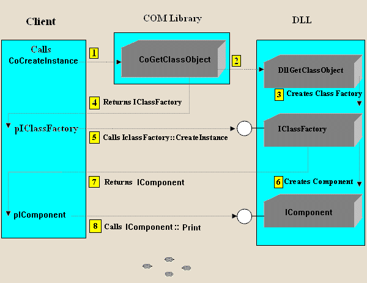
所以，为了改善这个例子，我们需要：
实现CFactory方法。
在组件服务器或DLL中实现DllGetClassObject而不是CreateInstance函数。
编写必要的代码（或使用注册文件），以便在Windows注册表系统中注册组件。
在Visual C ++开发环境中制作DLL也更容易。 下面将执行这些步骤：
使用应用程序向导，为该DLL创建一个新项目（名称为“组件”），并选择MFC应用程序向导（DLL）。 考虑到DLL现在将驻留在与其客户端不同的目录（ C：\ CodeProject ）中：
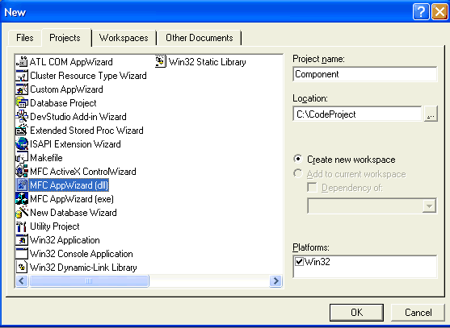
在第一步中，选择“MFC扩展DLL”，然后单击“完成”按钮：
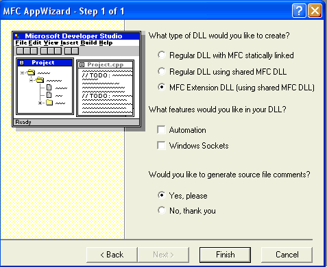
打开Component.cpp文件并将其内容替换为以下部分：
// Component.cpp : Defines the initialization routines for the DLL. // #include "stdafx.h" #include <afxdllx.h> #include "interface.h" #include <objbase.h> #include "iostream.h" #ifdef _DEBUG #define new DEBUG_NEW #undef THIS_FILE static char THIS_FILE[] = __FILE__; #endif// // Component.cpp ///////////////////////////////////////////// BOOL APIENTRY DllMain(HINSTANCE InsModule, DWORD dwReason, void* lpReserved) { return TRUE; }将组件的类和类工厂及其实现的定义复制并粘贴到源文件Component.cpp中 ，并忽略CreateInstance函数的导出，因为类工厂将创建该组件。
获取类工厂 - DllGetClassObject
当类的上下文是一个DLL时， DllGetClassObject函数将在CoGetClassObject函数中被调用，如前所述，它的工作是为该组件创建类工厂。 在Component.cpp文件中实现此功能：
/////////////////////////////////////////////////////////////////////////
STDAPI DllGetClassObject(const CLSID& clsid, const IID& iid, void** ppv)
{
if (clsid != CLSID_Component)
return CLASS_E_CLASSNOTAVAILABLE;
// Create class factory.
CFactory* pFactory = new CFactory ;
if (pFactory == NULL)
return E_OUTOFMEMORY;
// Get requested interface.
HRESULT hr = pFactory->QueryInterface(iid, ppv);
pFactory->Release();
return hr;
}编译并生成DLL（ Component.dll ）。
注册
使用GUIDGEN.EXE ，为组件的类创建一个CLSID
{49BF12F1-5041-48da-9B44-AA2FAA63AEFB}static const GUID CLSID_Component = { 0x49bf12f1, 0x5041, 0x48da, { 0x9b, 0x44, 0xaa, 0x2f, 0xaa, 0x63, 0xae, 0xfb } };
使用“.reg”扩展名（ component.reg ）创建一个文件，以便为组件创建注册表项（使用CLSID）：
REGEDIT HKEY_CLASSES_ROOT\Codeproject.Component.1 = Codeproject Component Version 1.0 HKEY_CLASSES_ROOT\Codeproject.Component.1\CLSID = {49BF12F1-5041-48da-9B44-AA2FAA63AEFB} HKEY_CLASSES_ROOT\Codeproject.Component = Codeproject Component HKEY_CLASSES_ROOT\Codeproject.Component\CurVer = Codeproject.Component.1 HKEY_CLASSES_ROOT\CLSID\{49BF12F1-5041-48da-9B44-AA2FAA63AEFB} = Codeproject Component 1.0 HKEY_CLASSES_ROOT\CLSID\{49BF12F1-5041-48da-9B44-AA2FAA63AEFB}\InprocServer32 = c:\codeproject\component.dll HKEY_CLASSES_ROOT\CLSID\{49BF12F1-5041-48da-9B44-AA2FAA63AEFB}\ProgID = Codeproject.Component.1 HKEY_CLASSES_ROOT\CLSID\{49BF12F1-5041-48da-9B44-AA2FAA63AEFB}\ VersionIndependentProgID = Codeproject.Component通过点击激活注册表文件。 运行注册表文件后，这些条目将存储在Windows注册表系统中。 下图显示了这些条目：
现在的链条完全被打碎了。可以用客户端测试一下。
客户端
现在，尽管组件的服务器（ component.dll ）驻留在目录C：\ codeproject中 ，但客户端可以轻松地加载它并通过类工厂和COM库使用它的功能，这是COM组件通常创建和使用的方式由他们的客户。 以下显示了客户端如何通过COM库使用组件：
//-----------//
// Client
//-----------//
voidmain()
{
HRESULT hr;
IUnknown* pIUnknown;
IComponent* pIComponent;
IClassFactory* pIClassFactory;
::CoInitialize(NULL);/*//Once the CoCreateInstance is called, the component
//will be created and the client can not
//control it, that's why CoCreateInstance is inflexible
//and the solution is to call CoGetClassObject function
hr = ::CoCreateInstance(CLSID_Component,NULL,
CLSCTX_INPROC_SERVER,IID_IUnknown,(void**)&pIUnknown) ;
if (SUCCEEDED(hr))
{
hr=pIUnknown->QueryInterface(IID_IComponent,(void**)&pIComponent);
if(SUCCEEDED(hr))
pIComponent->Print("COM from scratch.");
}
*///-------------------------------//
// improvement of the client code
//------------------------------//
// By calling the CoGetClassObject function, the client can control
// creation of the component
hr=CoGetClassObject(CLSID_Component,CLSCTX_INPROC_SERVER,
NULL,IID_IClassFactory,(void**)&pIClassFactory);
if(SUCCEEDED(hr))
{
hr=pIClassFactory->CreateInstance(NULL,
IID_IComponent,(void**)&pIComponent);if(SUCCEEDED(hr))
pIComponent->Print("COM from scratch.");
}
::CoUninitialize ();
}小结
在第一部分中 ，介绍了一些关于COM技术的背景信息，并通过一个简单的例子来说明COM组件。 在第二部分中 ，对示例中的代码进行了优化，使组件不再绑定到它的客户端，并且可以通过COM库创建。 第三部分是关于包容机制，我将引导读者重复使用另一个组件中的第二部分。
第三部分 - COM包容Containment
COM提供了两种代码重用机制。 这些机制被称为包容或委托和聚合。 在包容机制中，一个对象（“外部”对象）成为另一个对象的客户，在内部使用第二个对象（“内部”对象）作为外部对象在其自身实现中发现有用的服务的提供者。 COM包容类似于C ++包容; 但是，它处于接口层面。 外部组件包含指向内部组件上的接口的指针。 外部组件使用内部组件的接口来实现它自己的接口，并且还可以通过将调用转发给内部组件并在内部组件的代码之前和之后添加代码来重新实现内部组件的接口。 包容重用属于内部组件的接口的实现。 演示应用程序中的一个组件（CComponent3 ）（如上图所示）使用此机制。 到目前为止，一个组件已经被创建，它的接口支持Print方法。现在，为了使用包容机制，我们可以在一个新的组件中使用这个接口。 在下面，将创建一个新的组件，它重新使用以前的组件的接口，以建立自己的接口。 这个新的接口将支持两个新的数学函数，将被称为IMath接口。
组件的定义和服务器的实现
使用在第二部分中相同的方法，创建一个空项目作为组件的服务器（ Component2.dll ）。 第二部分详细介绍了创建DLL的步骤。新接口的定义：
正如你所知道的，每个COM接口都应该直接或者间接地从IUnknown接口派生出来，所以新的接口可以从前面部分实现的接口派生出来，并且这个接口直接来自IUnknown接口：
interfaceIMath: IComponent; {//desired functionality for the new component virtual int__stdcall Sum(int a,int b)=0 virtual int__stdcall Subtract(int a,int b)=0; };组件类的定义：
正如你可能知道的那样，组件的类可以通过从新创建的COM接口派生一个类来定义，因为将使用包含机制，所以需要一个创建内部组件的方法（可以从类工厂）和一个指向内部接口的指针：
class CComponent2:public IMath { private: long m_cRef;// Referance count IComponent* m_pInnerInterface; // pointer to the interface of the inner component public: //IUnknown virtual HRESULT __stdcall QueryInterface(const IID & iid,void** ppv); virtual ULONG __stdcall AddRef(); virtual ULONG __stdcall Release(); //IComponent (interface of the inner component) virtual void __stdcall Print (const char* msg); //IMath virtual int __stdcall Sum(int a,int b){return(a+b);} virtual int __stdcall Subtract(int a,int b){return(a-b);} // A method to create the inner component HRESULT __stdcall CreateInnerComponenet(); //Constructor CComponent2(); //Destructor ~CComponent2(); };实现CComponent2::CreateInnerComponent:
////////////////////////////////////////////////////// HRESULT __stdcall CComponent2::CreateInnerComponent() { HRESULT hr=CoCreateInstance(CLSID_Component,// CLSID for the component NULL,//No aggregation CLSCTX_INPROC_SERVER,//load only components contained in in-process servers or in DLLs. IID_IComponent,// interface indentifier (void**)&m_pInnerInterface );// pointer to the inner component to be returned if (FAILED(hr)) return E_FAIL ; else return S_OK ; }实现CFactory::CreateInstance():
//////////////////////////////////////////////////////////////////////// HRESULT __stdcall CFactory::CreateInstance(IUnknown* pUnkOuter,constIID& iid,void** ppv) { // Cannot aggregateif(pUnkOuter != NULL)returnCLASS_E_NOAGGREGATION ; // Create component2(the outer component). CComponent2* pComponent2 = newCComponent2 ; if(pComponent2 == NULL)returnE_OUTOFMEMORY ; // Create the inner component. HRESULT hr = pComponent2->CreateInnerComponent() ; if(FAILED(hr)) { pComponent2->Release() ;returnhr ; } // Get the requested interface. hr = pComponent2->QueryInterface(iid,(void**) ppv) ; //if Query faild the component will delete itself if(FAILED(hr)) pComponent2->Release() ;return hr ; }将呼叫转接到内部组件：
/// //////////////////////////////// void __stdcall CComponent2 :: Print（ const char * msg） { m_pInnerInterface->打印（MSG）; }使用GUIDGEN.EXE为组件的类和IMath接口的接口标识提供GUID：
//CLSID for component2's class // {0CDD7D97-DD93-450a-BBCF-6B22894FAFF5} extern "C" const GUID CLSID_Component2 = { 0xcdd7d97, 0xdd93, 0x450a, { 0xbb, 0xcf, 0x6b, 0x22, 0x89, 0x4f, 0xaf, 0xf5 } }; //IID for component2's IMath interface // {C8ACE8CC-0480-4f1a-8A62-89717E1D5705} extern "C" const IID IID_IMath = { 0xc8ace8cc, 0x480, 0x4f1a, { 0x8a, 0x62, 0x89, 0x71, 0x7e, 0x1d, 0x57, 0x5 } };
Client客户端
#include "objbase.h"
#include "interface.h"
#include "iostream.h"
//-----------//
//Client
//-----------//
void main()
{
HRESULT hr;
IUnknown* pIUnknown;
IMath* pIMath;
IComponent* pIComponent;
IClassFactory* pIClassFactory;
char buf[10];
int result;
::CoInitialize(NULL);
hr= CoGetClassObject(CLSID_Component2,CLSCTX_INPROC_SERVER,NULL,IID_IClassFactory,(void**)&pIClassFactory);
if(SUCCEEDED(hr))
{
hr= pIClassFactory->CreateInstance(NULL,IID_IMath,(void**)&pIMath);
if(SUCCEEDED(hr))
{
//pIMath->QueryInterface(IID_IComponent,(void**)&pIComponent);
//pIComponent->Print();
// or through IMath interface:
cout<<"pIMath->Print..."<<endl;
pIMath->Print("COM from scratch.");;// Using the method of the inner component like a client
cout<<"pIMath->Sum(1,1)=";
result=pIMath->Sum(1,1);
cout<<itoa(result,buf,10)<<endl;
result=pIMath->Subtract(1,1);
cout<<"pIMath->Subtract(1,1)=";
cout<<itoa(result,buf,10)<<endl;
}
}
::CoUninitialize ();
}下图显示了客户端程序的输出窗口：
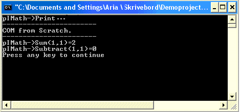
包容的一个用途是通过将代码添加到现有接口来扩展接口。 例如，演示应用程序的内部Component2有一个黄色的窗口，尽管Component2的背景颜色最初是白色的。 另一个变化是蝴蝶在创建内部组件后开始飞行，尽管最初它不能飞行。 这些变化是通过包容机制来实现的。 下面的一段代码和图显示了Component2一个方法是如何被专门化的。
/////////////////////////////////////////////////////////////////////
void __stdcall CComponent3::ShowWndBackground_Com2(COLORREF bgcolor)
// default background color is white
{
//--------------------------------------------------------------------------------//
//The outer component (Component3) can reimplement an interface supported
//by the inner component by forwarding calls to the inner component.The outer
//component can specialize the interface by adding code before and after the code
//for the inner component. As an example the background color of component2's window
//will be changed to yellow
//--------------------------------------------------------------------------------//
bgcolor=RGB(255,255,0);//bgcolor is changed to yellow color
//--------------------------------------------------------------------------------//
m_pIComponent2->StartFlying();//The butterfly should fly
m_pIComponent2->ShowWndBackground_Com2(bgcolor);
}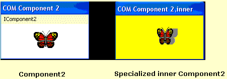
演示应用程序的代码与本文中介绍的示例非常相似，只有一个窗口用于可视化每个组件，而每个窗口的菜单则充当组件的接口。 我希望这些文章对你有用，可以从头开始写“COM”。